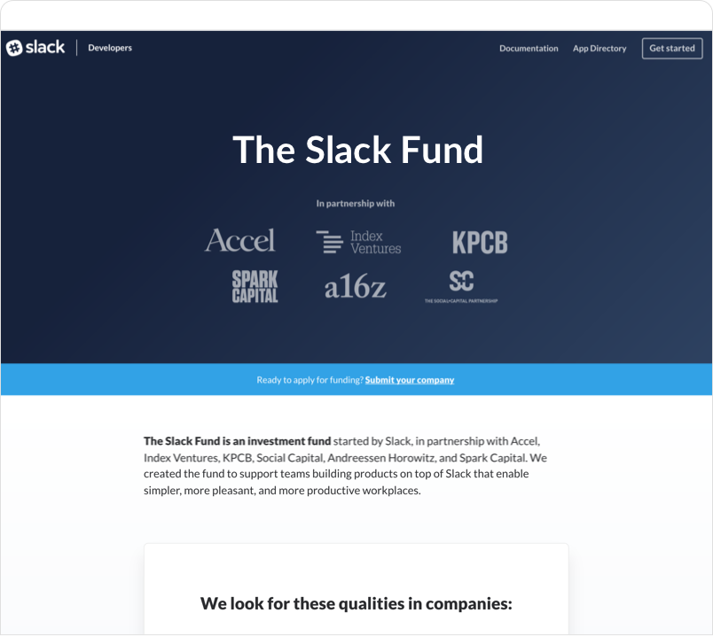
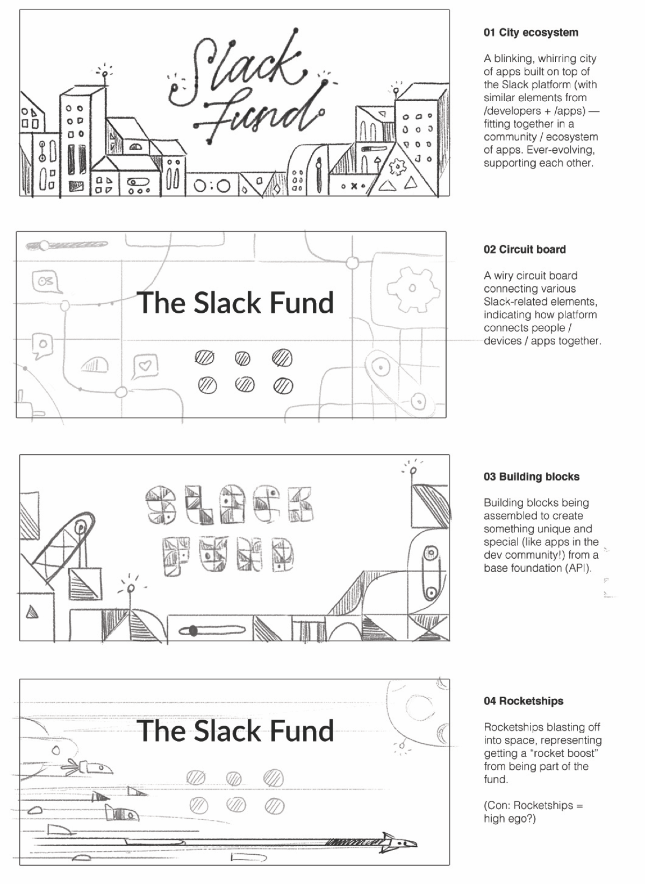
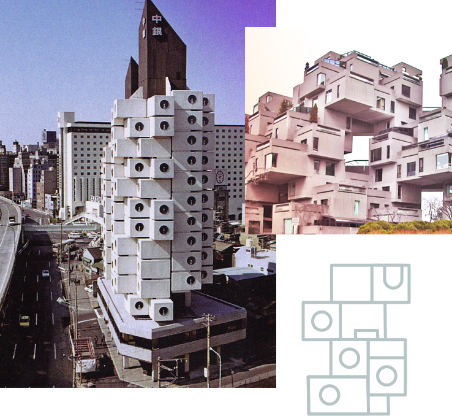
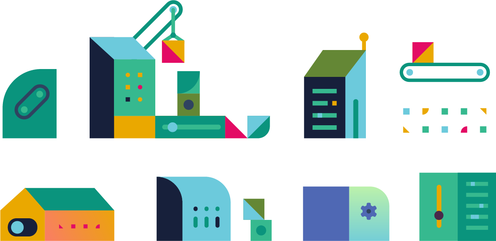
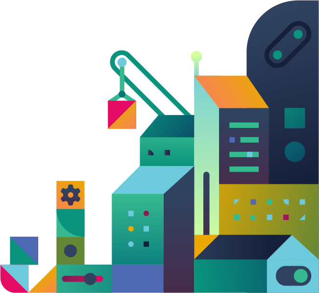
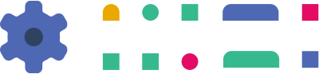
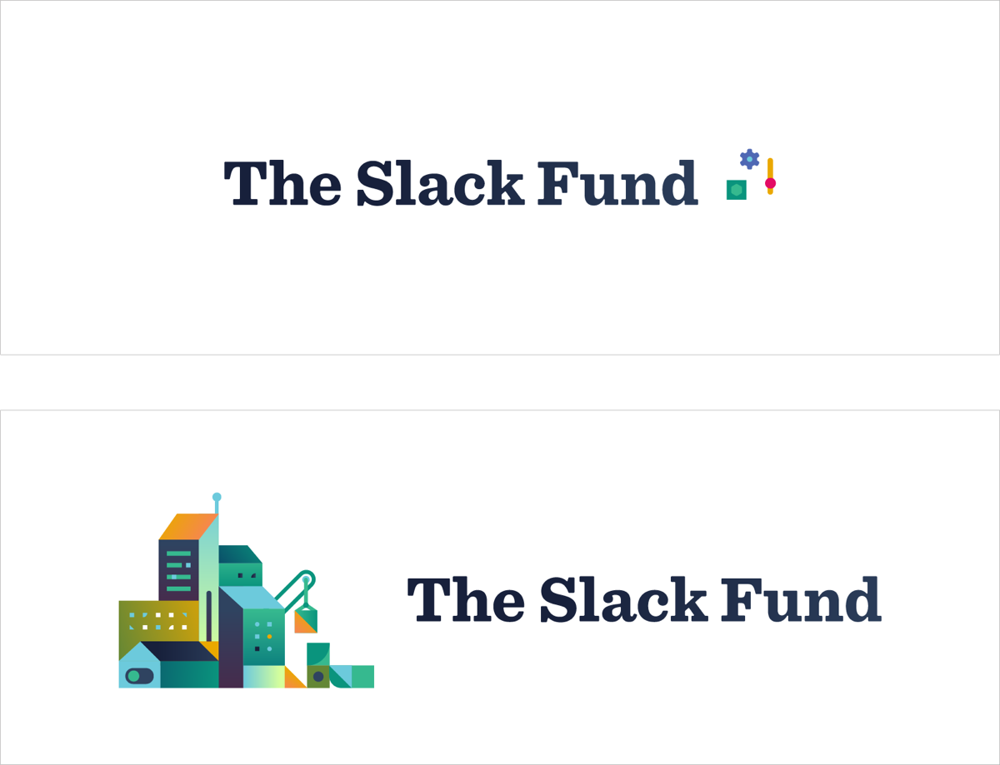
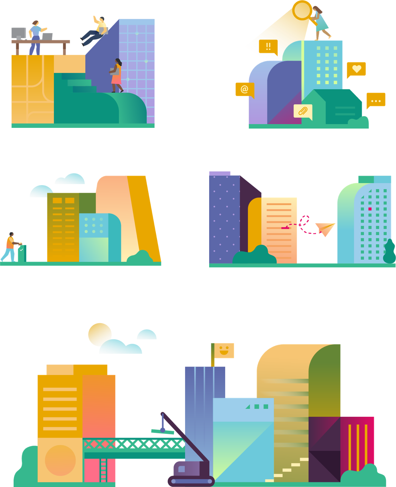

Whirring machines, blinking lights
Illustrations for the Slack Fund & Enterprise
A mentor of mine once told me that the best place for visual inspiration is beyond the computer: in the real, analog world. It's indeed a joy when your personal interests and obsessions (ie. semi-obscure Japanese architectural movements) contribute to your design process. Here's a look at a couple of projects with Slack that did just that!

Starting blocks
The brief
The design team at Slack asked me to create illustrations and a wordmark for the Slack Fund, an investment fund created to support developers building on the API. The team wanted to incorporate illustrations to communicate the project and make the site feel like a thoughtfully branded experience — as well as add in a little more visual pizzazz overall.
Starting point: The design team sent over a basic template of the page, sans illustrations. In terms of copy and layout, it was actually already pretty close to the final page that shipped.
In our initial kickoff brainstorm, designer Terra Spitzner pointed out that as a brand, Slack feels very human and relatable — so she suggested leaning on the side of creative and interpretive, rather than literal and technical. When it comes to more serious concepts (eg. developer tools, APIs, apps), I love to try my hand at reinterpreting them in different interesting and engaging ways, so I was all for it.
I drew up a few sketches that approach these concepts through a more creative lens: perhaps we could use simple puzzle units to represent the fundamental nature of API tools; intertwining circuit boards to showcase connecting and bringing users together; or even an ever-growing, pulsing cityscape as a nod to the interactivity and constant evolution of the apps ecosystem. Fundamentally, an important concept I was trying to abstractly illustrate was the idea of: “many smaller, individual units contributing to a larger, unified whole.”
Some sketches from our initial rounds of exploration
The team really gravitated towards the top row of options: a blinking, whirring cityscape, and a collection of ever-growing, self-perpetuating building blocks. The next challenge (and main feedback for me) was to take the best parts of each concept and combine them in a way that still felt visually light.
One sec, a quick architecture nerd out
Smaller pieces, forming a larger picture
Allow me to take a brief design-nerd digression. I've long been a fan of the Japanese Metabolist movement, an architectural philosophy that fuses together principles of organic growth and scalable urban development. The idea is that you can add and remove sections, allowing the buildings to evolve with the needs of their inhabitants. Think repetitively modular components and organic shapes, fused together to form futuristic, celluluar-like structures.

The most famous example of this is the Nakagin Capsule Tower in Tokyo (in the US, there's also Marina City in Chicago).
Despite being so multi-functional, these buildings can be broken down to a few simple, repeating shapes. It's the scalability of systems design at its most fundamental, applied to architecture.
I wanted these illustrations to feel similar: like complex compositions comprised of simple, basic shapes. I created a set of starting elements — building blocks, if you will (I'll see myself out) — that also worked in gears, blinking toggles, and simplified UI elements.
These modules could then be combined in a myriad visually diverse ways, just as in the inspiration that I took from real-life Metabolist architecture. I layered and built different components on top of each other, echoing the way how developers can use and interpret the API in different ways to make tons of different apps. Because the project was on a fairly tight deadline, taking this approach also allowed for more efficient execution.

Starting blocks
A simple wordmark
The team also asked me to create a simple wordmark, something that complemented the illustration set in a non-overwhelming way. I suggested a slightly customized version of Sentinel, a friendly and sturdy serif that also pairs well with Lato, the main typeface used throughout the product.
A couple of wordmark options
In the end, we went with just the typeface alone on the site, as the illustrations themselves are already quite dense — especially when animated.
View the live site: slack.com/fund
The final product is a cityscape that feels like it's building on top of itself and is dynamically evolving, with blinking lights and whirring toggles. I love that the overall composition looks like it's comprised of many tiny capsule-like sections — just as how individual projects contribute to a larger overall developer platform. Smaller pieces, building up to form a much bigger picture.
More buildings
Enterprise onboarding
In a separate project for enterprise onboarding, I used buildings to represent different teams within large business organizations. Like teams in a company, buildings can be connected, integrated, quickly accessed, etc. I'm just a fan of these blocky, interconnected building blocks at this point!
Depending on product context, communicating concepts like developer platforms and enterprise organizations can be tricky. For instance, if the context calls for something immediate and straightforward, you could take it in a literal direction — drawing developers at work on computers or teams in meetings. Or, you could also convey things more metaphorically, particularly if you're aiming for something more subtle and clever.
I ultimately enjoyed the challenge of stretching the ideas of “buildings” and “building blocks” to show how these different concepts could be communicated — connecting, growing, supporting each other, and the sum of many pieces contributing to a larger whole!
Special thanks to Slack designers Terra Spitzner, Brandon Velestuk & Matt Kump for the collaboration and being open to some of my kookier ideas! Also thank you to the Slack front-end team for animating the cityscapes so perfectly.
I'll be posting an illustration process post once a week for the next couple of months! Follow along here.